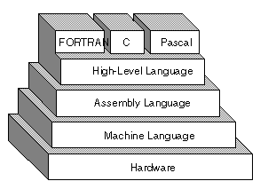

what is programming languages ?
A programming language is a vocabulary and set of grammatical rules for instructing a computer to perform specific tasks. The term programming language usually refers to high-level languages, such as BASIC, C, C++, COBOL, Java, FORTRAN, Ada, and Pascal.
Each programming language has a unique set of keywords (words that it understands) and a special syntax for organizing program instructions.

High-Level Programming Languages
High-level programming languages, while simple compared to human languages, are more complex than the languages the computer actually understands, called machine languages. Each different type of CPU has its own unique machine language.
Lying between machine languages and high-level languages are languages called assembly languages. Assembly languages are similar to machine languages, but they are much easier to program in because they allow a programmer to substitute names for numbers. Machine languages consist of numbers only.
Lying above high-level languages are languages called fourth-generation languages (usually abbreviated 4GL). 4GLs are far removed from machine languages and represent the class of computer languages closest to human languages.
Converting to Machine Language
Regardless of what language you use, you eventually need to convert your program into machine language because the computer only understand the machine language. There are two ways to do this:
1) Compile the program.
2) Interpret the program.
so programming language make it easy to the human to communicate with the computer .